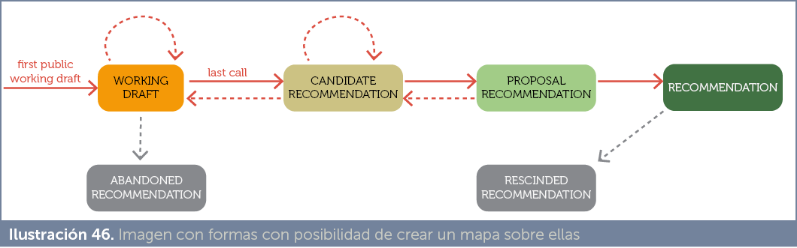

HTML, en especial en las últimas versiones, es un lenguaje descriptivo. Es decir; indica qué elementos hay en una página web, pero no la forma de presentarlos en pantalla. En sus primeras versiones todas las posibilidades de formato se conseguían mediante etiquetas. Así existían etiquetas para modificar el tipo de letra (font), uso de maquetaciones complejas (frame), etc. Es decir ante una nueva necesidad de formato, se inventaba una nueva etiqueta.
Hoy en día (y ya desde hace muchos años) se ha entendido que ese no es el modelo lógico para desarrollar páginas web. Se ha entendido que HTML no es el lenguaje que se debe de encargar de indicar cómo se deben formatear los datos. Las razones de no usar HTML para realmente dar formato a la página son:
CSS es la abreviatura de Cascade Style Sheets (Hojas de Estilo en Cascada) y se trata de un lenguaje de texto que se incrusta en las páginas web para definir el formato de la página. Actúa sobre los elementos HTML definiendo la forma en la que se mostrarán en pantalla (o en otros dispositivos).
Es capaz de actuar sobre todas las etiquetas del mismo tipo o sobre unas concretas. Se puede almacenar en un archivo aparte que después se puede usar para varias páginas a la vez. De modo que si cambiamos algo en el estilo, al instante se reflejará en todas las páginas.
CSS por lo tanto facilita la homogeneidad de las páginas y su mantenimiento. Hoy en día se considera una técnica imprescindible para dar formato a las páginas web. Además se puede aplicar también a código XML.
No es posible hoy en día crear páginas web sin utilizar CSS.
CSS se ideó a mediados de los años 90 y se ha ido estandarizando. A día de hoy se habla de tres versiones de CSS:
La especificación 2.1 es el último estándar. Modificó errores de la anterior.
En conjunto, la norma aún está en fase de borrador. Pero la mayoría de sus capacidades (estén o no aprobadas por la W3C) están ya implementadas en los navegadores. Se puede observar el estado de estandarización de sus componentes en www.w3.org/Style/CSS/current-work
CSS3 ha supuesto un auténtico pistoletazo de salida para webs con una apariencia más espectacular y vistosa, por lo que ha tenido un éxito inmediato. La mayoría de las nuevas páginas web se crean mediante CSS3 y está claro que no corre peligro de que se deje de usar en el futuro. Más bien al contrario: se seguirá ampliando y será cada vez más usado.
Se puede considerar que las normas CSS1 y CSS2 (hasta CSS 2.1) están ya soportadas por todos los navegadores actuales. Sin embargo CSS3 no está del todo adoptado. De hecho, jamás lo estará ya que la norma no está cerrada y aparecen nuevas capacidades (nuevos módulos) constantemente.
El proceso de adopción de nuevas propiedades para CSS sigue este proceso:
[1]Desde foros o medios influyentes se propone una posible nueva propiedad CSS.
[2]La empresa fabricante de un navegador influyente (Mozilla, Google, Microsoft, etc.) adopta de forma personal dicha propiedad que solo funcionará en algún navegador.
[3]La propiedad se hace popular entre los desarrolladores y cada vez más navegadores la soportan (aunque sea de forma personal).
[4]Si las entidades normalizadoras (como el W3C) lo estiman conveniente pasa a ser parte del estándar.
Que una característica forme parte del estándar tiene un largo proceso en el que esa característica pasa por diferentes fases. El estado actual de estandarización de los diferentes elementos de CSS está disponible en la URL https://www.w3.org/Style/CSS/current-work.
Para conseguir que una característica (o más bien un módulo de CSS, una serie de características) sea estándar, hay un proceso rígido en el que se debe pasar por estas fases:
[1]First Public Working Draft. Primer borrador de trabajo. Un grupo de trabajo del organismo W3C recoge propuestas detectadas en la comunidad sobre nuevas características a incluir en la norma CSS y publica un primer borrador con la propuesta. Se suelen agrupar un conjunto de características en módulos CSS, la propuesta hace referencia a un módulo concreto. El documento-borrador lo publicita a entidades, otros grupos de trabajo de la W3C y al público en general.
[2]Working Draft. Borrador de trabajo. Cuando ya se ha trabajado en el borrador anterior. Se recoge este trabajo y el nuevo módulo CSS pasa a estar en estado de Borrador de Trabajo (Working Draft). Este documento se puede revisar por el público y organismos técnicos antes de decidir que pase al estado siguiente.
[3]Last Call, Última llamada. Se pasa a este estado cuando el W3C indica que una fecha en la que el módulo CSS pasará a ser una característica recomendada por el organismo. En este estado de última llamada se avisa de que los comentarios de la comunidad deben hacerse antes de esa fecha.
[4]Candidate recomendation. Recomendación candidata. La propuesta pasa a poseer un documento técnico revisado que cumple la forma de la W3C para las recomendaciones. En este estado ya hay plazos para que la propuesta pase a ser una propuesta formal del organismo, salvo que se detecten problemas en la misma.
[5]Proposed Recomendation. Recomendación propuesta. En este estado, la propuesta ha sido totalmente aceptada por el W3C. En este caso habrá ya una fecha definitiva para que la propuesta pase a ser una recomendación completa de la W3C. No se pueden hacer cambios significativos en este estado de la propuesta, salvo que se publique otra recomendación candidata u otro borrador.
[6]Recomendación. Cuando una propuesta pasa a este estado, se considera que ya es estándar y utilizable por todos los desarrolladores y herramientas.
[7]Rescinded recomendation. Recomendación escindida. A este estado pasan recomendaciones obsoletas que no están en uso, bien por la aparición de otros elementos que la mejoran o bien porque se detecta que su uso no ha sido positivo.

Independientemente de si una característica de CSS pasa a ser estándar o no, para determinar si una página web creada por nosotros debe de utilizar esa característica, conviene tener claro qué navegadores la soportan y cuáles no.
Algunas páginas como http://css3test.com/ y http://caniuse.com permiten comprobar qué parte (incluso qué porcentaje) de CSS3 reconoce cada navegador (especialmente caniuse.com).
Muchos navegadores incorporan elementos CSS nuevos, antes de que el estándar los recoja. Para ello, las propiedades CSS nuevas que incorpora un navegador concreto y que no son estándares, se acompañan de un prefijo.
Los prefijos habituales son:
Así para algunas propiedades que están en proceso de desarrollo podemos encontrarnos código CSS como este:
div{
-moz-columns:3; -webkit-columns:3; columns:3;} } |
La razón es que los navegadores Mozilla y los que utilizan el motor Webkit (como Chrome) en algunas versiones implementaban las columnas (característica bastante reciente de CSS) de forma propia. Por ello se indica la propiedad con el prefijo y finalmente sin él para que los navegadores que han adoptada esta propiedad de forma estándar la lean correctamente. Además la forma estándar siempre es la última que se indica para que sea la que prevalece (los navegadores que no la reconozcan, no la tendrán en cuenta).
Otra posibilidad es detectar el navegador de usuario (para lo que hace falta código en JavaScript) e indicarle que se actualice a uno más adecuado para nuestra página web. Esto último se puede hacer también con utilidades gratuitas como por ejemplo la disponible en outdatedbrowser.com/es.
Finalmente hay que señalar que hay navegadores que permiten probar nuevas características de CSS antes de que sean adoptadas por los navegadores comerciales (para que los desarrolladores se familiaricen con ellas).
Así, Google posee el navegador Chrome Canary y Mozilla posee hasta tres: Firefox Nightly (permite probar de forma prematura nuevas características), Firefox Developer Edition (que posee toda una caja de herramientas para desarrolladores, además de incorporar CSS aun no disponible en la versión final) y Firefox Beta (que permite probar la siguiente versión de Firefox antes de que sea definitiva).
CSS es un lenguaje distinto de HTML. Es muy sencillo, pero su dificultad radica en que es muy extenso.
CSS sigue esta sintaxis fundamental:
selector {
propiedad1:valor1;
propiedad2:valor2;
… } |
El selector nos permite indicar a qué elemento (o elementos) de la página web se va a aplicar el formato CSS.
El formato se indica mediante un conjunto de propiedades y valores. Esas propiedades permiten indicar qué formato estamos cambiando y los valores indican la modificación que hacemos a esa propiedad.
Ejemplo:
p{
font-size:14pt;
color:red;
} |
En ese código CSS, el selector es el elemento p (que seleccionaría todos los párrafos normales del documento). Las propiedades que se cambian es el tamaño de letra (font-size) y el color. Se conseguirá por tanto que los párrafos salgan con tamaño de letra de 14 puntos y color rojo.
Dentro del código CSS se pueden colocar comentarios. Para ello el texto del comentario se encierra entre los símbolos /* y */. Ejemplo:
p {
|
Utilizado de esta forma, el código CSS se aplicará a la etiqueta en la que se ha incluido dicho código. Eso se consigue gracias a que todos los elementos de HTML (p, strong, abbr, h1,…) pueden utilizar un atributo llamado style, dentro del cual se coloca el código CSS. Ejemplo:
<!doctype html> |
En este caso el código CSS no lleva selector alguno, porque el estilo se aplica al elemento en el que se incrustó el código CSS. El resto del documento no queda afectado por el código CSS.
En este caso el código CSS se inserta debajo del elemento HTML style que se colocará en la zona de cabecera (head). Este código afectará a toda la página web. Ejemplo:
<!doctype html>
</head> |
Con ese código todos los elementos de tipo p se mostrarán en color rojo ya que es a esa etiqueta (mediante el selector p) al que se ha aplicado el formato.
El elemento HTML style usa fundamentalmente dos atributos:
En la versión HTML 5 ha dejado de ser obligatorio, por lo que hoy en día no se usa (se da por hecho que el lenguaje de formato de páginas es CSS).
Es el caso más habitual. Se trata de crear un archivo de texto con extensión .css al que se le inserta código CSS. La ventaja es que el mismo archivo nos sirve para aplicar su código a diferentes documentos. De esa forma conseguimos una mayor coherencia estética y una centralización del formato; ya que, si modificamos el archivo CSS, todos los documentos que utilicen esa hoja de estilo aplicaran automáticamente los cambios.
La forma de incorporar el código CSS de un archivo externo es mediante el elemento link (se sitúa dentro del elemento head).
Por ejemplo, si hemos creado un archivo de texto css llamado estilo1.css con este contenido:
/*Contenido del archivo estilo1.css */
p{
|
Suponiendo que lo guardemos en el mismo directorio que la página web a la que se aplica, el código que permite aplicar dicho código CSS es:
<!doctype html>
</head> |
La etiqueta link tiene los atributos:
Es posible que algunas páginas web utilicen varios estilos referidos al mismo elemento. Ejemplo:
<!doctype html> <style type=”text/css” media=”screen”> |
En el código anterior, la cuestión es en qué color saldrá el texto Hola , teniendo en cuenta que por un lado saldría de color azul (ya que la etiqueta p hemos marcado que tenga ese color y hemos indicado rojo en el atributo style de dicha etiqueta).
La respuesta es: de color rojo, porque tiene prioridad la definición más restrictiva. Las reglas de aplicación de estilos son (se indica cuáles se aplican a antes y cuáles después):
[1]Los estilos del navegador. Es decir el formato predefinido del navegador. Todos los navegadores poseen un estilo predefinido, que dicta con que tamaño por defecto se muestra el texto, los colores, el tipo de letra, etc. Estos estilos son los que se aplican en primer lugar.
[2]Después se aplican los estilos externos (los que se incorporan con la etiqueta link).
[3]Después los que proceden de la etiqueta style en la cabecera del documento.
[4]Después los que se definan internamente en el elemento (mediante el atributo style).
[5]En caso de dos estilos referidos al mismo elemento y definidos en el mismo ámbito (por ejemplo ambos procedentes de archivos externos e incluidos con el elemento link) tiene preferencia el último que aparece en el código.
[6]Tienen preferencia siempre los estilos definidos sobre los elementos más internos
Ejemplo:
<style> strong{
color:red;
} p{
color:green;
} </style> <body> <p>Soy verde<strong>Soy rojo</strong></p> </body> |
El elemento strong aparece de color rojo ya que es más interno que el elemento p.
Se puede alterar la preferencia por defecto utilizando una palabra clave: !important. Los estilos marcados con !important tienen preferencia sobre cualquier otro. Ejemplo:
<!DOCTYPE html> <html lang=”es”> <head> <meta charset=”UTF-8”> <title>Prueba important</title> <style>
</style> </head> <body> <h1>Color</h1> <p>Esto es una </p> </body> </html> |
El texto prueba aparece de color verde, aunque el atributo style tiene prioridad sobre el elemento del mismo nombre. La razón es que !important altera ese orden.
Hay que tener en cuenta que hay etiquetas que son padre de otras. Es decir etiquetas que contienen a otras. En el ejemplo:
<p>Arturo Herrero: <em>Los años veinte</em></p> |
La etiqueta p es padre de la etiqueta em (em está dentro de p). Esto hace que em herede todo el estilo que posea p y además añada el suyo propio. Por ejemplo, si hemos definido:
p{
|
En el ejemplo anterior, los años veinte tendrán color azul, heredado del párrafo en el que se encuentra el texto de tipo em, y tamaño 14, ya que tiene prioridad el tamaño asignado al elemento em.
Una página HTML que no use código CSS, mostrará el contenido utilizando el formato predefinido en el navegador.
Esto significa que el navegador decide el estilo de la página. Corremos, por tanto, el riesgo de que nuestra página se muestre distinta en diferentes navegadores porque apliquen diferente estilo inicial.
Para no correr riesgos, muchos diseñadores de páginas web, crean un primer estilo normalizador. Esto se realiza creando una primera hoja de estilos que contenga el formato inicial deseado para cada elemento HTML (o al menos para cada elemento que utilicemos en nuestras páginas).
Un opción muy habitual es utilizar como normalizador, la librería
normalize.css disponible en http://necolas.github.io/normalize.css/ que es una hoja de estilos ya preparada para normalizar el funcionamiento de todos los elementos HTML5 en cualquier navegador. Con ella se asegura que el aspecto inicial es el mismo en cualquier navegador, además de conseguir que la apariencia inicial sea más moderna.
Como se ha visto, en HTML 5 la etiqueta:
<meta charset=”utf-8”> |
Indica que el documento HTML utiliza la codificación de caracteres UTF-8. Si tenemos un archivo CSS que dentro utiliza caracteres fuera del ASCII (algo que no ocurre a menudo), disponemos de un elemento en el lenguaje CSS que permite avisar de la codificación del archivo. Se trata de @charset.
Esta instrucción CSS debe de ser la primera del archivo y basta simplemente con indicarla y, seguidamente, añadir la codificación utilizada. Por ejemplo:
@charset “utf-8”
|